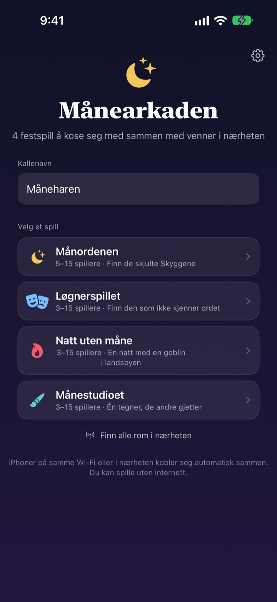
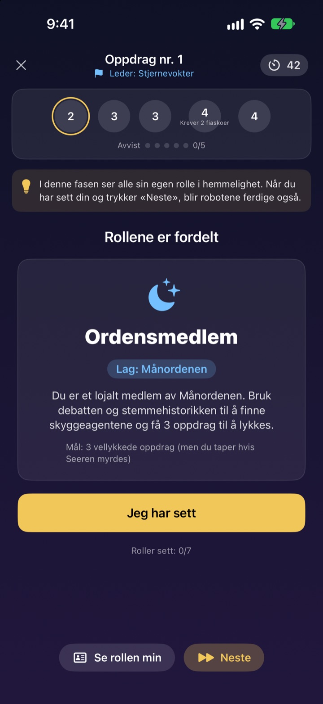
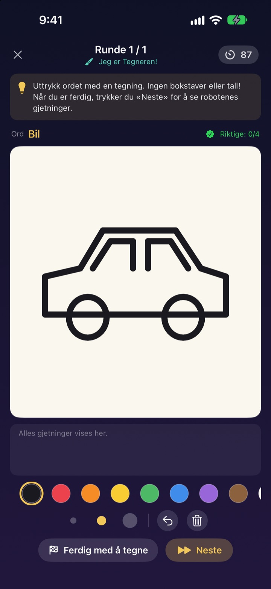
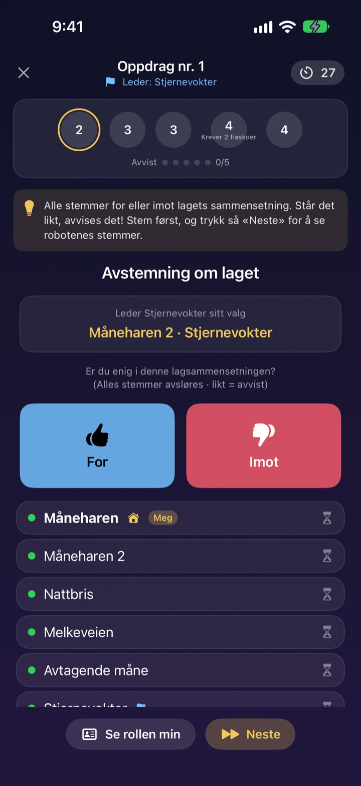

Er alle her?
Frem med iPhonen.
Én oppretter et rom, og alle i nærheten er med på sekunder. Roller og hemmelige ord vises bare på din egen skjerm: ingen kort, og ingen må stå utenfor og lede spillet.
Alle spill er gratis. Ingen konto, ikke internett.

Spill en runde Løgnerspillet
Se for deg fem iPhoner på bordet, og trykk på dem én om gangen for å titte. Bare én spiller kan ikke ordet. Dere kan også sende skjermen rundt.
Alle er her, men hva skal vi spille?
Spillkveld, hyttetur, jul med familien. I spill med skjulte roller må én stå over og lede, og brettede lapper er aldri helt hemmelige. På en hytte med dårlig wifi går ikke nettspill heller. I Månearkaden tar iPhonene seg av spilledelsen, rollefordelingen og tilkoblingen.
Rollen din vises bare på din skjerm
Når spillet starter, får hver iPhone sin egen rolle eller sitt eget ord. Ingen kortutdeling, ikke noe «alle lukker øynene».
Under avstemningen ser man bare hvem som har stemt. Hvem som stemte på hvem, er hemmelig til avsløringen.

Fire spill for alle selskap
I Løgnerspillet vinner den som prater best, i Månordenen jakter dere på Skyggene med oppdrag og avstemninger, i Natt uten måne finner dere goblinen på én natt, og i Månestudioet tegner én mens resten gjetter.
Månordenen fra 5 spillere, de andre fra 3, alle opptil 15.

Nytt spill? Lært på noen minutter
Hvert spill har modusen «Slik spiller du», der du spiller en runde med roboter steg for steg. Les tipset øverst, og trykk på Neste.
Hvis appen lukkes eller tilkoblingen faller ut, trykker du på Fortsett på startskjermen og er tilbake i samme runde.

Kom i gang i tre steg
- 1
Kallenavn og spill
Alle åpner appen, skriver et kallenavn og velger spill.
- 2
Opprett eller bli med i et rom
Én oppretter et rom, de andre finner det under Finn rom i nærheten.
- 3
Verten starter
Når alle er inne, trykker verten på Start spill. Appen tar seg av resten.
De fire spillene
- Løgnerspillet · 3–15 spillere
- Alle får samme ord unntatt én. Etter tur beskriver man det, så stemmer man på løgneren. Gjetter den avslørte løgneren ordet, vinner hen likevel.
- Månordenen · 5–15 spillere
- Avslør Skyggene som gjemmer seg i Ordenen. Lederen velger et oppdragslag, alle stemmer for eller mot, og laget spiller i hemmelighet suksess eller fiasko. Siden som først vinner tre oppdrag, vinner.
- Natt uten måne · 3–15 spillere
- Én natt, og en goblin gjemmer seg i landsbyen. Om natten handler Sjamanen, Nattetyven og Spøkefuglen i hemmelighet. Ved daggry diskuterer man og har bare én avstemning til å finne goblinen.
- Månestudioet · 3–15 spillere
- Én tegner ordet, og resten gjetter i chatten. Jo raskere du gjetter riktig, jo flere poeng, og den som tegner får poeng for hvert riktige svar.
Alle spill kan først prøves alene med roboter i modusen «Slik spiller du».
Vanlige spørsmål
Jeg ser ikke rommet.
Sjekk at verten og spillerne er på samme wifi eller nær hverandre. Månearkaden må være slått på under Innstillinger ▸ Personvern og sikkerhet ▸ Lokalt nettverk for å finne enheter i nærheten. Med både wifi og Bluetooth på er tilkoblingen mest stabil.
Må jeg gi tilgang til lokalt nettverk?
Ja, det er slik appen finner iPhoner i nærheten og kobler seg til dem. Hvis du trykket på Ikke tillat, slår du det på igjen under Innstillinger ▸ Personvern og sikkerhet ▸ Lokalt nettverk.
Tilkoblingen falt ut midt i spillet.
Åpne appen igjen, og trykk på Fortsett på startskjermen for å komme tilbake til samme rom og runde. Rolle og poeng er der fortsatt. Tar det lang tid, bli med på nytt fra romlisten.
Noen svarer ikke, og spillet har stoppet opp.
Verten kan når som helst fjerne en spiller som ikke svarer, og spillet regner om med de som er igjen og fortsetter. I GM-vertsmodus kan man også hoppe over et steg som har låst seg.
Hvor mange spillere trengs?
Månordenen krever 5. Løgnerspillet, Natt uten måne og Månestudioet starter fra 3. Alle tar opptil 15. For få? Lær reglene med roboter i «Slik spiller du».
Trenger vi internett eller konto?
Nei. Ingen registrering, ingen innlogging, ikke internett. iPhoner i nærheten kobler seg direkte sammen, og spilldata sendes aldri til en server.
Kan jeg prøve et spill alene først?
Ja. Velg et spill og deretter «Slik spiller du (øv med roboter)». Robotene kommer inn i rommet, og du spiller en hel runde steg for steg.
Hvordan melder jeg en feil eller sender en idé?
Rett fra appen under Innstillinger (tannhjulet) ▸ Støtte, eller på e-post til adressen nedenfor. Vi svarer så fort vi kan.
Feil, ideer eller noe annet: skriv til mizzking75@gmail.com.